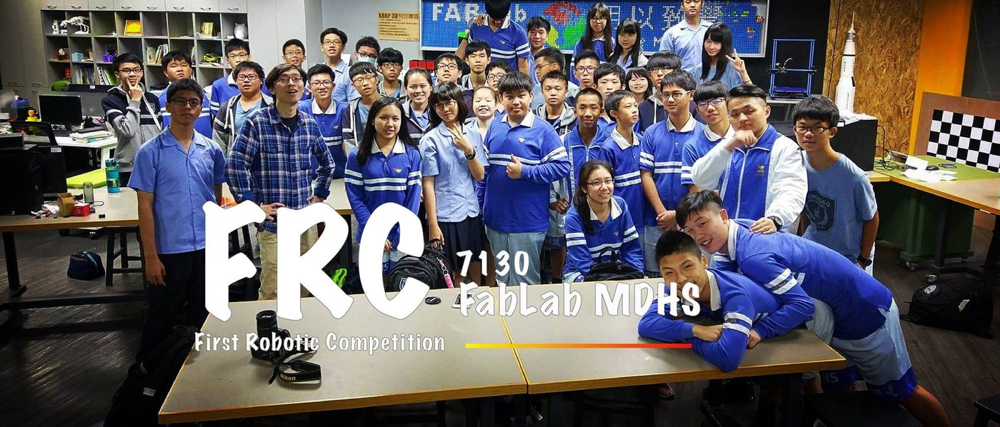
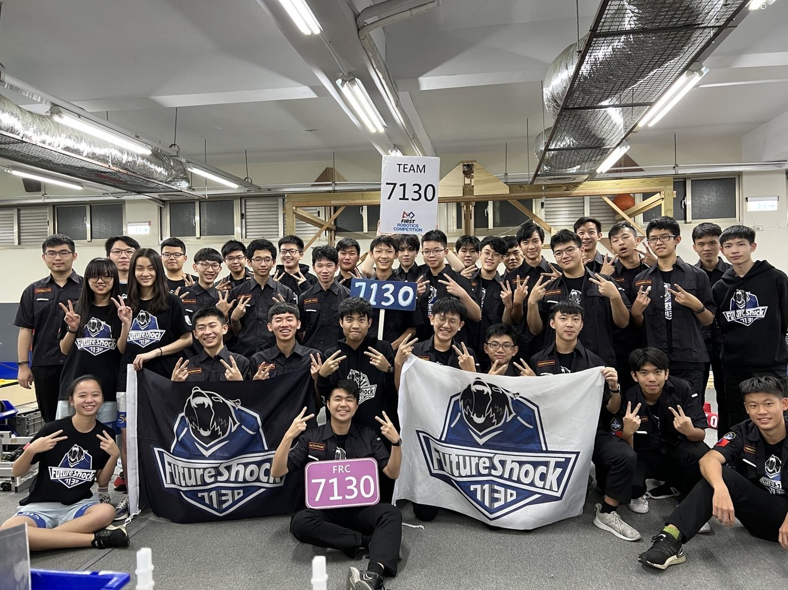
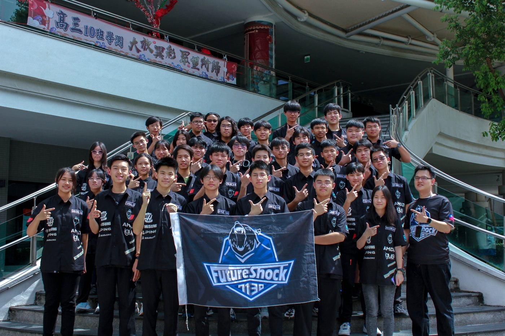
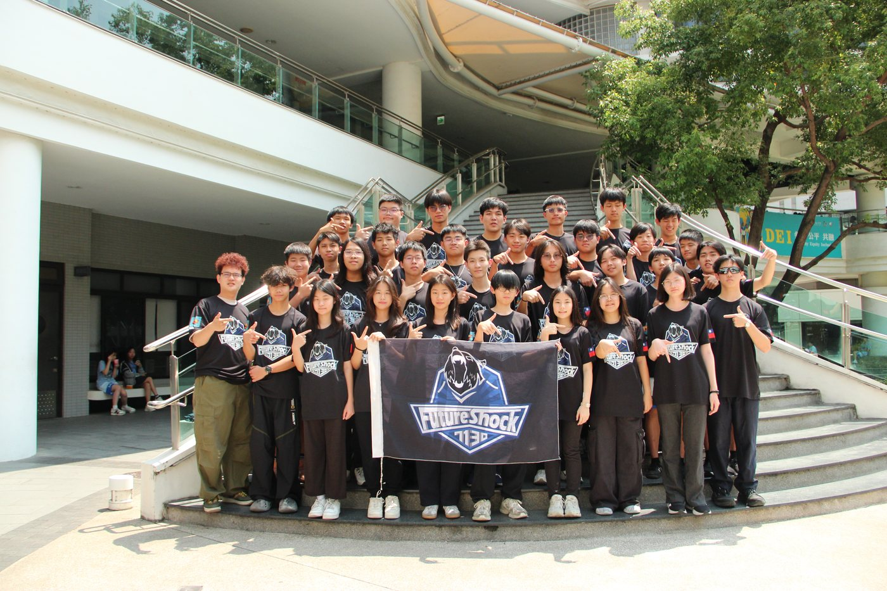

Eight Seasons of Future ShockFuture Shock 的八個賽季
Our journey started in 2017 with one simple goal: build, compete, win. Nine years later, we are the first and longest-running FRC team in Central Taiwan — and that goal has grown into building an entire ecosystem.
我們的旅程始於 2017 年，目標很單純：造機器人、參賽、獲勝。九年後，我們是中台灣第一支、也是運作最久的 FRC 隊伍——而那個目標，已成長為打造整個生態系。
2017–2018 — The Beginning— 創隊元年
- Team 7130 Future Shock established; workspace in FAB LAB; first recruitment drew 200+ applicants, 50 accepted (grades 7–11), with 5 mentors.7130 Future Shock 成立；進駐 FAB LAB；首次招生吸引超過 200 人報名、錄取 50 人（國一至高二），共 5 位導師。
- First competition: Southern Cross Regional — Rank 29, 2nd pick of Alliance 2.首次出賽：Southern Cross Regional——排名 29、第 2 聯盟第二指名。
- 🏆 Imagery Award in honor of Jack Kamen🏆 Imagery Award（Jack Kamen 紀念獎）

2018–2019 — Building Capability— 厚植實力
- Purchased milling machine, lathe, and two 3-axis CNCs; established fixed off-season training (SolidWorks, machining, FRC design).添購銑床、車床與兩台三軸 CNC；建立固定的非賽季培訓（SolidWorks、機械加工、FRC 設計）。
- Southern Cross Regional — Rank 2, Captain of Alliance 2.Southern Cross Regional——排名第 2、第 2 聯盟隊長。
- 🏆 2nd place & Excellence in Engineering, 2019 NEHS Practice Match; 2nd place, NEHS Off-Season🏆 2019 NEHS 練習賽亞軍與卓越工程獎；NEHS 季後賽亞軍

2019–2020 — Pandemic Disruption— 疫情衝擊
- Workspace relocated and expanded; team regulations established; new Outreach roles (documentation, finance, photography, PR); team grew from 19 to 35 members.工作空間搬遷與擴充；建立隊規；新增公關組職務（文書、財務、攝影、公關）；隊伍由 19 人擴編至 35 人。
- COVID-19 cancelled all competitions — the team rebuilt knowledge transfer from scratch.COVID-19 導致所有比賽取消——隊伍從零重建技術傳承。

2020–2021 — Holding the Line— 堅守陣線
- Added welding equipment; co-hosted winter training with NEHS; booth at Dagang Maker Festival.新增焊接設備；與 NEHS 合辦冬訓；參與大港自造祭擺攤。
- 🏆 Judges Award — FRC Science Park Taichung 5G Digital Regional🏆 中科 5G 數位區域賽評審獎

2021–2022 — Engineering Leaps— 工程躍進
- Custom mecanum-wheel chassis and gearboxes; first soft-material 3D printing; first swerve drive research; weekly YouTube build videos (Robot In Five Weeks).自製麥克納姆輪底盤與變速箱；首次軟性材料 3D 列印；首度研究 swerve 傳動；每週發布 YouTube 進度影片（Robot In Five Weeks）。
- New Taipei City x Hon Hai Regional — Rank 19, semifinalist.新北市 × 鴻海區域賽——排名 19、四強。

2022–2023 — Going International— 邁向國際
- First swerve chassis in competition; first U.S. regionals: Ventura County (Rank 27) and Arizona East (Rank 22, quarterfinalist); added a Scouting team.首次於正賽使用 swerve 底盤；首征美國區域賽：Ventura County（排名 27）、Arizona East（排名 22、八強）；新增 Scouting 團隊。
- 🏆 Industrial Design Award & quarterfinalist — Taiwan Playoff🏆 台灣季後賽工業設計獎、八強

2023–2024 — Champions at Home— 主場稱王
- San Francisco Regional (Rank 29) and Sacramento Regional (Rank 22, quarterfinalist); acquired a CNC machine; added a Driver team; exchanges with teams 1678, 5507, 5274.舊金山區域賽（排名 29）、沙加緬度區域賽（排名 22、八強）；取得 CNC 加工機；新增 Driver 團隊；與 1678、5507、5274 等隊交流。
- 🏆 FRC Taiwan Playoff Champion🏆 FRC 台灣季後賽冠軍

2024–2025 — Recognition & Ecosystem— 榮耀與生態系
- Long-term partnership with AMD; volunteering at local schools; exchanges with 9079, 10390, 11313; secured 80% of sponsors for the following season.與 AMD 建立長期合作；至在地學校志工服務；與 9079、10390、11313 交流；提前確保下一季 80% 的贊助。
- 🏆 Rising All-Star Award — New Taipei City Regional (Rank 20)🏆 新北區域賽 Rising All-Star 獎（排名 20）
- 🏆 Excellence in Engineering Award — Oklahoma Regional🏆 奧克拉荷馬區域賽卓越工程獎
- 🏆 AMD Impact & Inspiration Award — Taiwan Playoff🏆 台灣季後賽 AMD Impact & Inspiration 獎

2025–2026 — REBUILT & Beyond— REBUILT 與未來
- Initiated the 2025 Taiwan FRC Summit (9 teams, ~100 participants); only team in Taiwan selected for SYSTEMCORE Beta Testing — the next-generation control system for 2027.發起 2025 台灣 FRC 高峰會（9 隊、近百人）；成為全台唯一獲選 SYSTEMCORE Beta 測試的隊伍——2027 年新世代控制系統。
- Full digital robot book published for the REBUILT season — see Robots → 2026.REBUILT 賽季完整數位機器人手冊已發布——見機器人 → 2026。

Awards Wall獲獎牆
2018 · Imagery Award (Southern Cross)
2018 · Southern Cross Semifinalist
2019 · Excellence in Engineering (NEHS)
2019 · Southern Cross Rank 2
2021 · Judges Award (Taichung 5G)
2021 · Nanke Simulation Semifinalist
2022 · New Taipei x Hon Hai Semifinalist
2022 · Industrial Design Award (Off-Season)
2023 · Arizona East Quarterfinalist
2023 · Industrial Design Award (Taiwan Playoff)
2024 · FRC Taiwan Playoff Champion
2024 · Sacramento Semifinalist
2025 · Rising All-Star (New Taipei City Regional)
2025 · Excellence in Engineering (Oklahoma Regional)
2025 · AMD Impact & Inspiration (Taiwan Playoff)